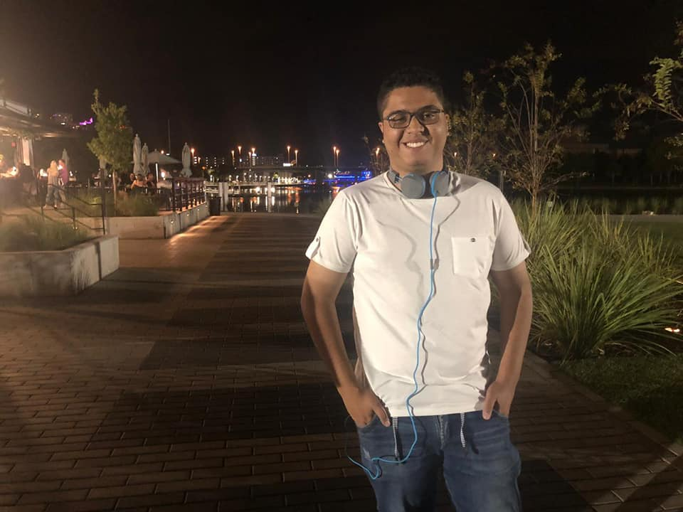
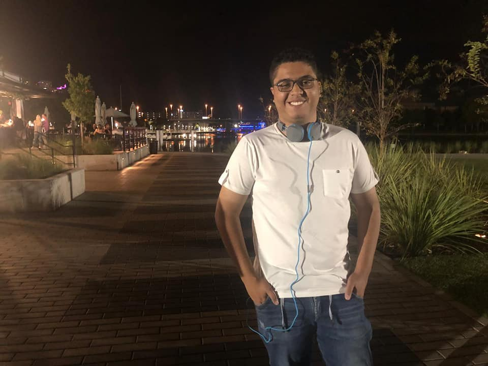

Miguel Ángel González Peña
Comunicador desarrollador de Videojuegos y Tecnólogo en Gestión de Redes de Datos
Sobre mí

Soy Miguel Ángel González Peña, desarrollador de videojuegos con formación en Comunicación en Entretenimiento Digital. Combino habilidades en programación (C++, Python, C# con Unity, Java), diseño gráfico (Adobe Suite), animación, edición audiovisual, web y me apasiona la Inteligencia Artificial. Además, tengo experiencia trabajando con motores como Unity y Unreal Engine.
Proyectos


Proyecto Destacado: "Al ritmo de las leyendas"
Juego musical en 2D para móviles donde interpretas a César, un niño de Amagá, Antioquia, enfrentándose a leyendas y mitos del Suroeste Antioqueño mediante la música típica de la región. Desarrollé un motor de niveles similar a Guitar Hero y el proyecto fue reconocido con el "Premio Huellas 2023" de la Universidad de Medellín.

Video - Ritmo de las leyendas
Haunted Blind

Haunted Blind es un juego diseñado para personas con discapacidad visual, donde el objetivo es
escapar de un lugar abandonado. El proyecto busca ofrecer una experiencia de terror inmersiva
mientras
el jugador explora distintos mapas creados por la comunidad.
Mi participación consistió en la conexión a la base de datos y la creación de la
página
web donde los usuarios podían crear sus propias campañas para ampliar el juego.
Video
Video - Haunted Blind
Habilidades
Programación
C++, Python, C#, Java
Motores de Juego
Unity, Unreal Engine
Diseño y Multimedia
Adobe Suite (Photoshop, Illustrator, Premiere), Animación y Efectos Visuales
Web e IA
HTML, CSS, JavaScript,
Entusiasta de la Inteligencia Artificial